RADE |
RADE Interactive Products |
Installing Rational Applications with DS PluginsHow to install Rational Applications with DS Plugins |
| Technical Article | ||
AbstractThis article is intended for people administrating the Rational Software Architect Designer and RADE interactive products. |
After installation of the RADE CD on a workstation, all users are provided with a default working environment enabling them to work with the C++ Interactive Dashboard within Visual Studio, or with the Java Interactive Dashboard or Data Model Customizer within Rational Applications.
To install the DS plugins for Rational Applications, you must launch the interactive setup tool.
In order to launch this interactive setup tool, simply, with administrator privileges, start the program called CATVBTSetup located in the RADE installation directory. Right click CATVBTSetup .exe in an explorer, and click Run as administrator, then press Yes in the User Account Control dialog box.
"c:\Program Files\Dassault Systemes\B28\win_b64\code\bin\CATVBTSetup.exe"
If no ssh implementation exists on your computer, the following prompt opens:
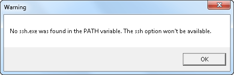
Click OK.
The setup tool looks like this, but appearance may vary from one configuration to the other:
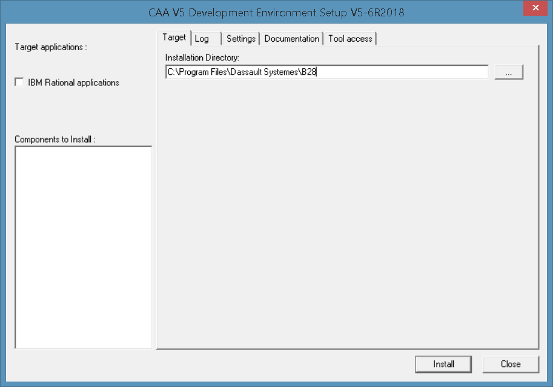
Click IBM Rational applications.
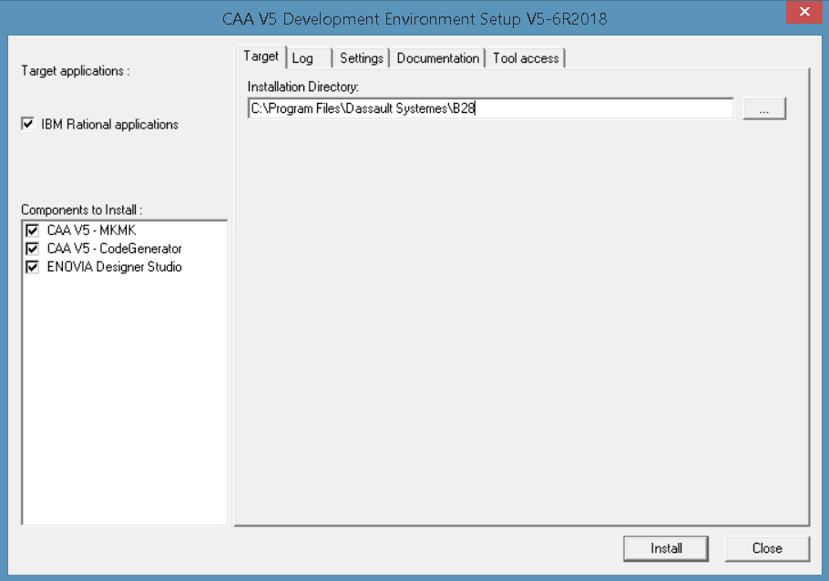
Click the components to install. The installation directory box is normally filled. This refers to the RADE installation directory.
Note on the left-hand side the various target applications you wish to install the products on. Currently, only IBM Rational applications is available.
The list of components to install is displayed in the box named Components to Install. Check the components to install depending on your RADE products:
[Top]
The following options do not require administrative privileges, and can be modified by an individual user.
The Settings tab page enables you to customize variables used by the various interactive tools.
|
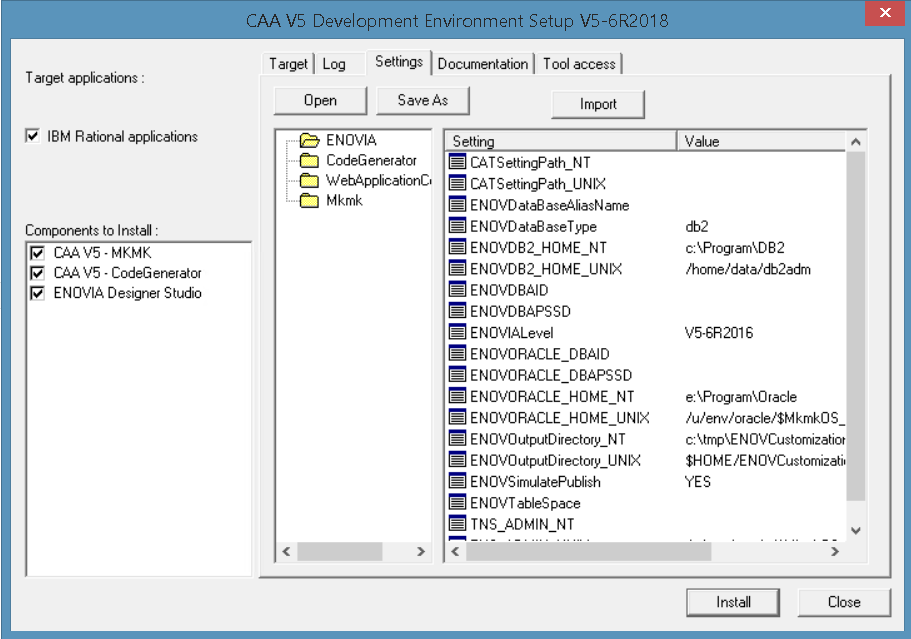 |
There are currently two categories of variables:
CATSettingPath: The setting path of the ENOVIA server installation.ENOVDataBaseAliasName: ENOVIA database alias name.ENOVDataBaseType: the type of the database. Possible values:
db2 or oracle.ENOVDB2_HOME: Installation path of DB2 if db2 database
installedENOVDBAID: Id of the ENOVIA database administrator.ENOVDBAPSSD: Password of the ENOVIA database administrator
(this value is not kept).ENOVORACLE_HOME: Installation path of ORACLE if ORACLE
database installed.ENOVOutputDirectory: UNIX directory where generated libraries,
SQL orders and metadata files are copied to facilitate deployment.ENOVSimulatePublish: Default value for publish (YES for
simulation, NO for NoSimulation, i.e. database modification).ENOVTableSpace: Name of the ENOVIA tablespace.TNS_ADMIN: For Oracle only. The default value is the installation
path of oracle with /network/admin suffixed.CATCompanyName: The generated code has a standard header.
You can modify the name of the company developing the software. Default
value is Dassault Systemes, but you can insert your own company name in
its place when developing your code.To edit a variable, double click it. A dialog box opens:
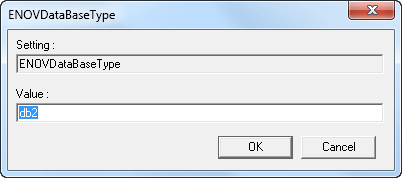
Type the appropriate value, and click OK.
[Top]
The Tool Access tab page allows you to modify several tool initialization options:
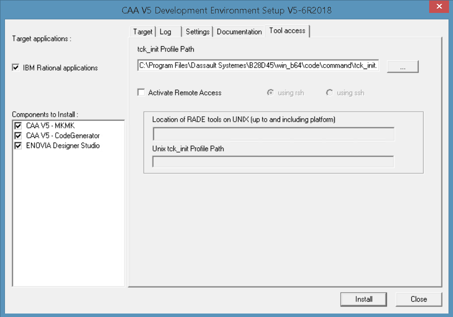
[Top]
Warning: this section applies to Data Model Customizer only.
The Tool access tab page also enables you to build your software on a UNIX platform. CAA-RADE V5 Products CD-ROM should have been previously installed on Unix before running this optional step.
In addition, to be able to send commands to the UNIX computer, you must have an implementation of either rsh or ssh installed on your Windows computer and available from the PATH environment variable.
When connecting to a UNIX machine from the Data Model Customizer, the connection is established under a given user only if that user has authorized the connection by adding a line in the .rhosts file in the user's home directory specifying the Windows computer name and the Windows user name.
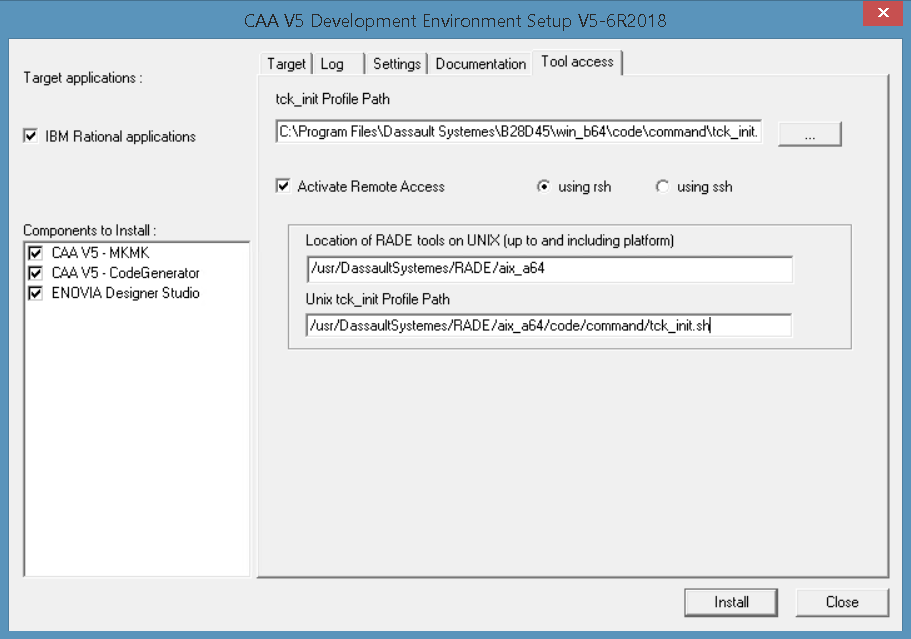
[Top]
Once you have set all the options you required, click Install to modify the options in your directory.
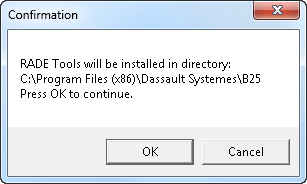
Click OK.
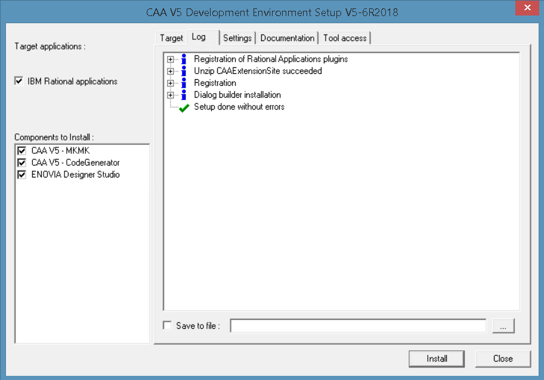
In the Log tab page, notice that the various steps and warnings are listed to guide you in case a step should fail. If you have not administrator privileges, you are warned first, but setup will continue for those operations not needing it.
[Top]
Warning: Run the steps below without the administrator privileges.
To perform this installation, you need to create an Eclipse extension. To do so, proceed as follows:
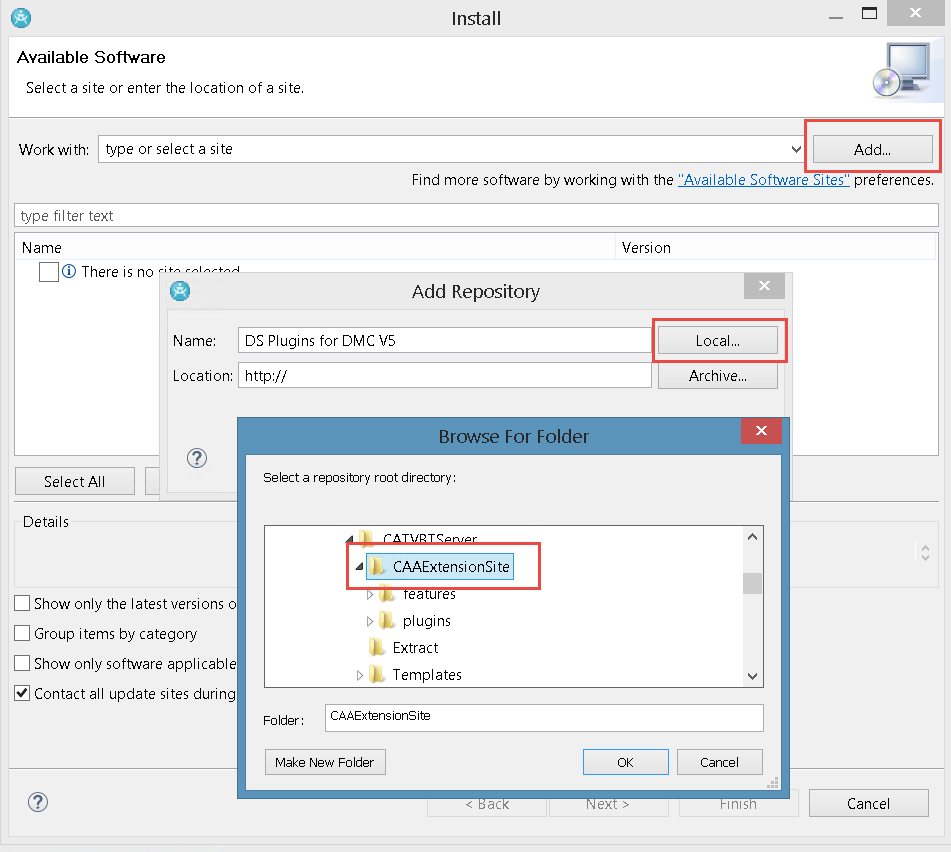
Warning: Run the steps below without the administrator privileges.
To perform uninstallation of Dassault Systemes extensions for Rational Software Architect Designer, proceed as follows:
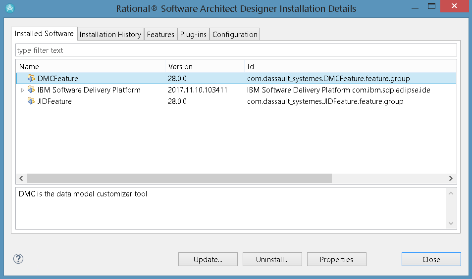
[Top]
| Version: 6 [Nov 2017] | Document updated for V5-6R2018 |
| Version: 5 [Jul 2014] | Document updated to remove C++ add-ins and for Rational Software Architect Designer |
| Version: 4 [Jul 2007] | Document updated |
| Version: 3 [Dec 2006] | Document created |
| [Top] | |
Copyright © 1999-2017, Dassault Systèmes. All rights reserved.